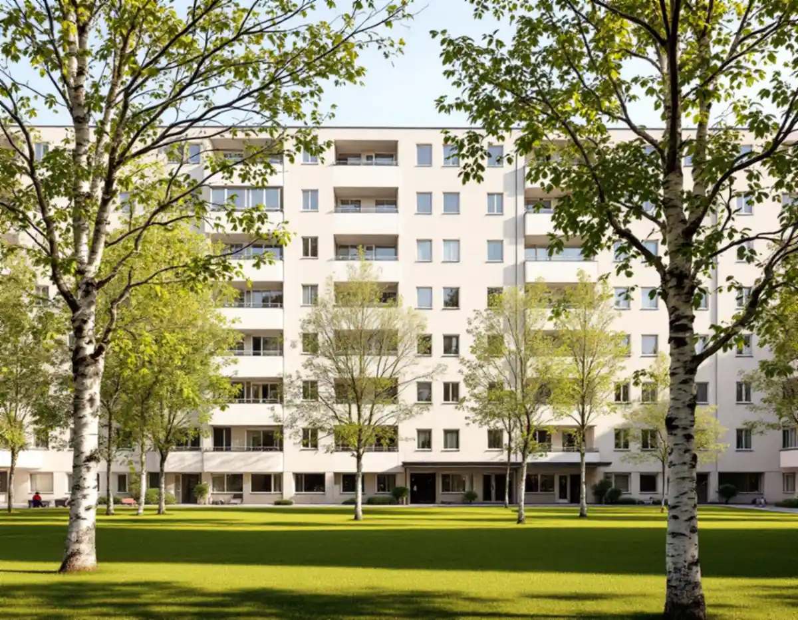
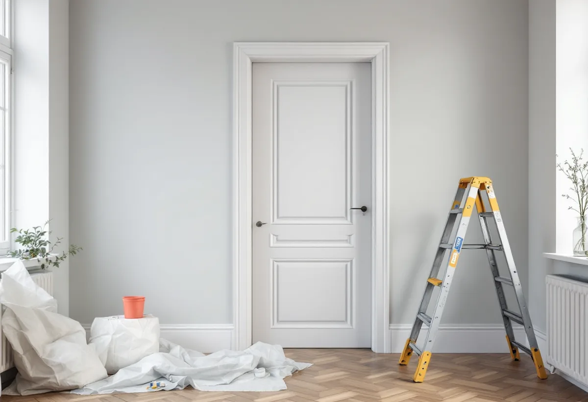

Stadgar och regler
Vi går igenom vad stadgarna lägger på dig och vilka arbetstider föreningen tillåter.
En lägenhet i Fredhäll eller Kristineberg ser enkel ut, men bakom de släta väggarna och dörrarna kan det finnas nästan hundra år av färglager. Geal Entreprenad AB målar väggar, tak, snickerier och element i lägenheter på Kungsholmen och reder ut tillsammans med dig vad som är ditt ansvar och vad föreningen ska sköta.

Stadens översiktsplan beskriver hur en ny sorts stadsdel började byggas omkring 1930 utifrån funktionalismens stilideal. I innerstaden hamnade de nya områdena framför allt i utkanterna, och planen nämner Fredhäll och Kristineberg som exempel. Fristående huskroppar med öppna, gröna gårdar blev idealet. På andra delar av Kungsholmen finns i stället den klassiska stenstaden med slutna kvarter, som översiktsplanen daterar till 1870–1930, så två helt olika husgenerationer finns på samma ö.
Lägenheterna i Fredhäll och Kristineberg är till största delen bostadsrätter. Stadens områdesfakta för 2025 räknar 4 584 bostäder i flerbostadshus i Kristineberg, varav 3 230 bostadsrätter, och 3 715 i Fredhäll, varav 2 219 bostadsrätter. Resten är hyresrätter, privata eller i allmännyttan. För den som ska måla om betyder det att föreningens stadgar ofta avgör lika mycket som färgvalet, och för den som hyr att målningen först är en fråga för hyresvärden.

Statens fastighetsverk beskriver i sina tekniska anvisningar för byggnadsmåleri hur synen på den målade ytan ändrades när funktionalismen kom omkring 1930. Färgskikten skulle inte längre härma marmor, ek eller andra dyrare material utan fick ett värde i sig, som en del av arkitekturen. Under mellankrigstiden kom också de syntetiska lackfärgerna på alkyd. Under första halvan av 1900-talet användes de främst som slutstrykning på ytor som skulle stå sig blanka, och den tåliga alkydfärgen valdes gärna i bostadskök och badrum.
En dörr eller ett fönsterfoder från 1930-talet kan därför bära linoljefärg längst ner, alkyd i mitten och en latexbaserad lackfärg överst. Riksantikvarieämbetet varnar för att det kan vara svårt även för en erfaren fackman att avgöra färgtyperna när en yta målats om många gånger, eftersom antalet färgtyper mångfaldigades under 1900-talets andra hälft. Vi provar därför vidhäftningen på en undanskymd del av snickeriet innan vi väljer grundfärg och slutstrykning.
Enligt bostadsrättslagens sjunde kapitel, 12 §, ska bostadsrättshavaren på egen bekostnad hålla lägenheten i gott skick, om inte stadgarna bestämmer något annat. Föreningen ska enligt 4 § hålla lägenheten, huset och marken i gott skick i den mån ansvaret inte ligger på medlemmen. Lagen drar alltså bara en ram. Var gränsen går för fönster, lägenhetsdörr och element står i den egna föreningens stadgar, och dem läser vi tillsammans med dig innan arbetet planeras.
Samma kapitel säger i 9 § att den som bor i lägenheten ska se till att grannarna inte utsätts för störningar som inte skäligen bör tålas, och att föreningens ordningsregler ska följas. Vi frågar därför efter reglerna för arbetstider och trapphus, täcker golvet där vi bär in material och lägger slipning och spackling på tider som föreningen godtar. Hur dammet från en golvslipning på Kungsholmen hanteras beskrivs på sin egen sida.
Skatteverkets lista över vad som ger rotavdrag i en bostadsrätt är konkret. Att måla golv, tak, väggar och element räknas, liksom att måla eller lacka dörrar och köksluckor och att måla innerdörrar och insidan av ytterdörrar och fönster. Utsidan av fönster och ytterdörrar ger däremot inget avdrag, och inte heller balkonger, fasader eller arbete i trapphus och entréer. Arbetet ska dessutom gälla sådant som du ansvarar för enligt stadgarna.
På väggarna spacklar vi bara där det behövs. Riksantikvarieämbetet skriver att antalet spacklingar minskade igen från 1940-talet, att spacklet är en svag länk och att ju tjockare skiktet är, desto sämre tål ytan stötar. På ytor som inte har spacklats tidigare bör man inte börja spackla. Ska badrummet göras om i samma veva finns mer under badrumsrenovering på Kungsholmen, och om målning i stort på sidan om målare.
Vi går igenom vad stadgarna lägger på dig och vilka arbetstider föreningen tillåter.
Vidhäftningen prövas på ett dolt snickeri innan grundfärgen väljs.
Rum för rum, med ytor som ger ROT och ytor som inte gör det på egna rader.
Golv, element och dörrkarmar täcks, och vägen genom trapphuset skyddas.
Tak först, sedan väggar, sist snickerier och element.
Vi går igenom rummen med dig i dagsljus och bättrar det som syns.
Skatteverket kräver att du äger bostaden när arbetet utförs, och en hyrd bostad ger inget avdrag. Enligt områdesfakta 2025 är 1 354 av 4 584 lägenheter i flerbostadshus i Kristineberg hyresrätter, knappt tre av tio, och i Fredhäll 1 496 av 3 715, ungefär fyra av tio. För bostadsrätten gäller avdraget arbete innanför lägenhetens tak, väggar och golv, så länge åtgärden ligger på dig enligt stadgarna.
Avdraget är 30 procent av arbetskostnaden, högst 50 000 kr per person och år och högst 75 000 kr ihop med rutavdrag. Färg och resor ingår inte. Geal drar avdraget direkt på fakturan.
Antalet rum och takhöjden, hur många dörrar, foder och element som ska målas, hur mycket som behöver spacklas och om gamla lager måste slipas bort styr kostnaden. Efter ett kostnadsfritt besök i lägenheten får du ett skriftligt kostnadsförslag.
Fasad, fönster och invändig målning.
Målare i Stockholm →Stambyte, stämmobeslut och 30-talshus.
Badrumsrenovering på Kungsholmen →Föreningens stambyte.
Byggföretag på Kungsholmen →Slätputs på funkishus, lagad utan synliga skarvar.
Fasadrenovering på Kungsholmen →Stenhusen, funkishusen och bygglovet.
Fönsterbyte på Kungsholmen →Fönstret i bostadsrätten, insida och beslag.
Fönsterrenovering på Kungsholmen →Stegljud, golvval och styrelsens tillstånd.
Golvläggare på Kungsholmen →Slipa och lacka golvet i bostadsrätten.
Golvslipning på Kungsholmen →Ny tapet på putsade lägenhetsväggar.
Tapetsering på Kungsholmen →Hela lägenheten från golv till tak.
Totalrenovering på Kungsholmen →